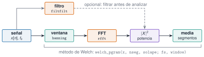

Las unidades de procesado de señales de la vía M (M3 y M4) explican qué es un espectro, una ventana o un filtro. Esta unidad enseña cómo se calculan con los paquetes FFTW.jl y DSP.jl, comprobando cada resultado contra una cuenta a mano o contra las funciones de Resonancia.jl. Se recomienda haber hecho antes J1.4 a J1.7.
NotaCómo se lee esta unidad
Tiempo orientativo: 120 minutos. Objetivos (5), teoría en seis píldoras (25), práctica guiada (55), «Pídeselo a Claude» (15), ejercicios (15) y cierre (5). Los ejemplos usan los registros sintéticos del edificio de tres plantas (datos/sinteticos/edificio-3-plantas/): 100 Hz, tres modos conocidos de 1,105, 2,939 y 4,390 Hz.
Objetivos y prerrequisitos
Objetivos. Al terminar esta unidad sabrás:
predecir la frecuencia aparente de una señal submuestreada (aliasing) y comprobarlo;
calcular un espectro de amplitud con rfft y rfftfreq, con la escala correcta;
explicar la fuga espectral y reducirla con una ventana, corrigiendo la amplitud;
estimar una densidad espectral de potencia con welch_pgram y contrastarla con psd_welch;
diseñar y aplicar un filtro Butterworth, causal y de fase cero, y calcular un espectrograma.
Prerrequisitos. El curso no impone ninguno en el temario; conviene J1.4 a J1.7 (funciones, arrays y figuras).
Reparto con otras unidades. La teoría (teorema de Nyquist, resolución, leakage, diseño de filtros) está en M3 y M4. Aquí se implementa y se verifica; no se repite la demostración.
Teoría breve
J3.8.1 Muestreo y aliasing
Muestrear a \(f_s\) solo permite ver frecuencias hasta la de Nyquist, \(f_N=f_s/2\). Una senoide de frecuencia \(f\) por encima de \(f_N\) no desaparece: se pliega y aparece con la frecuencia aparente
Figura 1: Aliasing. Una senoide de 7 Hz (línea azul, muestreada a 100 Hz) se muestrea a 10 Hz (puntos naranjas). Los puntos coinciden con una senoide de 3 Hz (línea discontinua): con esa frecuencia de muestreo, ambas son indistinguibles.
La senoide aparente tiene la fase invertida (-sin), que es lo que da ecuación 1 cuando \(f_s/2<f<f_s\). En la práctica, el aliasing no se corrige después: se evita con un filtro antialiasing antes de muestrear (M3.4).
Una vibración de 80 Hz se muestrea a 100 Hz. ¿A qué frecuencia aparece en el espectro?
\(f_{ap}=|80-\operatorname{round}(0{,}8)\cdot100|=|80-100|=20\) Hz.
J3.8.2 La FFT con FFTW.jl
FFTW.jl calcula la transformada rápida de Fourier para cualquier longitud (la FFT propia de Resonancia.jl solo admite potencias de 2). Para una señal real se usa rfft, que devuelve solo las frecuencias de 0 a \(f_N\), y rfftfreq(N, fs), que da el eje en Hz. Para pasar a un espectro de amplitud hay que escalar: una senoide de amplitud \(A\) da un módulo \(A\,N/2\) en su bin, así que
Las amplitudes salen 1,5 y 0,5, las de la señal, porque 10 s a 100 Hz contienen un número entero de periodos de las dos senoides. Se comprueba además que fft de FFTW coincide con la FFT propia del paquete cuando la longitud es una potencia de 2:
¿Cuál es la resolución en frecuencia, \(\Delta f=f_s/N\), de una FFT de 1000 muestras a 100 Hz?
\(100/1000=0{,}1\) Hz, que es f[2] en el código anterior. Para distinguir dos frecuencias separadas 0,05 Hz haría falta registrar durante al menos 20 s.
J3.8.3 Fuga espectral y ventanas
La FFT supone que el registro se repite indefinidamente. Si no contiene un número entero de periodos, el salto entre el final y el principio se interpreta como una discontinuidad y la energía de la senoide se reparte entre muchos bins: es la fuga (leakage). Se reduce multiplicando la señal por una ventana que tiende a cero en los extremos, como la de Hann (DSP.hanning). Como la ventana atenúa la señal, la amplitud se corrige dividiendo entre la ganancia coherente\(\overline{w}\) (la media de la ventana).
Figura 2: Fuga espectral de una senoide de 2,55 Hz (amplitud 1) que no ocupa un número entero de periodos. Sin ventana (azul) la energía se reparte en 48 bins y el pico ronda 0,64; con ventana de Hann (naranja, discontinua), solo seis bins superan 0,01 y el pico sube a 0,85.
Queda un residuo: aun con ventana, el pico (0,85) no llega a 1 porque 2,55 Hz no cae justo en un bin (la rejilla es de 0,1 Hz): es la pérdida por escalonamiento (scalloping), que M4.1 cuantifica y que se corrige con la ventana flat-top.
Una ventana de Hann elimina por completo la fuga espectral y deja el pico con su amplitud exacta.
Falso. Reduce mucho la fuga lejos del pico, pero ensancha el lóbulo principal y no corrige el escalonamiento: la amplitud del pico sigue dependiendo de dónde caiga la frecuencia respecto de la rejilla.
J3.8.4 Densidad espectral con Welch
Para señales aleatorias (el ruido ambiental de una estructura) un solo periodograma es muy ruidoso. El método de Welch divide la señal en segmentos con solape, ventanea cada uno, calcula su periodograma y los promedia: se pierde resolución (la de un segmento) y se gana estabilidad. En DSP.jl:
Las dos implementaciones coinciden por encima de 0,5 Hz con una diferencia relativa inferior al 0,05 %; la pequeña discrepancia se debe a que psd_welch resta la media a cada segmento (detrend) y usa una ventana de Hann periódica, y la de DSP.hanning es simétrica. Cerca de 0 Hz la diferencia es grande precisamente porque DSP no quita la media. El teorema de Parseval comprueba la escala: la integral de la PSD (\(\sum P\,\Delta f\)) es la varianza de la señal.
AdvertenciaErrores frecuentes
Comparar densidades espectrales de dos registros con distintonseg o distinta ventana sin decirlo. La resolución en frecuencia es \(f_s/n_{seg}\) y la escala depende de la ventana: dos PSD son comparables solo si se calcularon igual.
¿Qué resolución tiene welch_pgram(y, 4096, 2048; fs=100.0)?
\(f_s/n_{seg}=100/4096\approx0{,}0244\) Hz.
J3.8.5 Filtros digitales
DSP.jl diseña filtros en dos pasos: un tipo de respuesta (Lowpass, Highpass, Bandpass, Bandstop, con sus frecuencias de corte en Hz) y un método de diseño (Butterworth(n), Chebyshev1(n, rp)…). digitalfilter(respuesta, método; fs=...) devuelve el filtro, y se aplica de dos formas:
filt(filtro, x): causal. Procesa de izquierda a derecha y retrasa la señal (distorsión de fase).
filtfilt(filtro, x): lo aplica hacia delante y hacia atrás, y por eso tiene fase cero (no retrasa) y la atenuación se duplica. Solo vale para análisis diferido, no en tiempo real.
Para ver el retraso se filtra una senoide de 1,1 Hz con un pasa-bajos de 2 Hz y se busca el desfase con la correlación cruzada (en muestras, positivo si la salida va retrasada). En el centro de una banda un pasa-banda apenas retrasa, y por eso no sirve para esta demostración.
Figura 3: Filtro pasa-banda Butterworth de orden 4 entre 0,8 y 1,5 Hz aplicado a la planta 3. Arriba, la PSD original (azul) y la filtrada con fase cero (naranja): solo queda el primer modo. Abajo, una senoide de 1,1 Hz (azul) y su salida por un pasa-bajos de 2 Hz: la causal (filt, gris) va retrasada unos 0,22 s y la de fase cero (filtfilt, naranja, discontinua) coincide con la original.
¿Cuándo usarías filt y cuándo filtfilt?
filt cuando el filtro debe funcionar en tiempo real (solo se dispone de muestras pasadas).
filtfilt en análisis diferido de registros completos, porque no introduce retraso de fase.
J3.8.6 Espectrograma
Un espectro dice qué frecuencias hay en todo el registro; un espectrograma dice cuándo: calcula un espectro por cada tramo corto y los apila en una imagen tiempo–frecuencia. Con DSP.spectrogram(x, nseg, solape; fs, window) se obtiene una matriz de potencia con los vectores time y freq. El compromiso es el de siempre: segmentos largos dan buena resolución en frecuencia y mala en tiempo, y viceversa. Como la planta es estacionaria, se usa un barrido (chirp) sintético de 1 a 8 Hz en 60 s para ver una frecuencia que cambia:
Figura 4: Espectrograma de un barrido de 1 a 8 Hz en 60 s (ventana de 512 muestras, 5,12 s, con 75 % de solape). La línea brillante sube de forma lineal con el tiempo. La barra de color da la potencia en escala logarítmica.
NotaIdea clave
Todo análisis espectral es una cadena (Figura 5): señal, ventana, FFT, potencia y promedio. Cada eslabón tiene un parámetro (nseg, solape, ventana, fs) que condiciona el resultado, y por eso se anotan junto con la figura.

Figura 5: Cadena de análisis espectral y funciones de DSP.jl y FFTW.jl que se usan en cada paso. El filtro es un paso opcional previo.
El espectrograma de 6000 muestras con segmentos de 512 y solape de 384 avanza 128 muestras por tramo. ¿Cuántos tramos produce?
\(\lfloor(6000-512)/128\rfloor+1\).
\(\lfloor5488/128\rfloor+1=42+1=43\) tramos (el segundo valor de forma en el resultado).
Práctica guiada
Vamos a encadenar todo lo anterior sobre la planta 3 del edificio y a verificar cada paso: la PSD, el aislamiento del primer modo con un filtro y la comprobación cruzada con el modelo.
Paso 1. Frecuencias de la PSD frente a las del modelo. El modelo da las frecuencias exactas; la PSD, estimadas con la resolución de 0,0244 Hz.
Paso 2. ¿Se queda el filtro con el primer modo? Se comparan la energía total y la del filtrado: la varianza de la señal filtrada debe ser aproximadamente la contenida en el primer pico.
Las dos varianzas difieren un 4 %: el filtro no es ideal (deja pasar algo de energía fuera de banda y atenúa en los bordes), pero el orden de magnitud lo valida. El primer modo aporta el 27 % de la varianza de la planta 3.
Paso 3. Reconstrucción por la FFT. La FFT es invertible: irfft devuelve exactamente la señal, salvo redondeo.
Ver el código
yr =irfft(rfft(y), length(y))maximum(abs.(yr .- y))
4.0245584642661925e-16
«Pídeselo a Claude»
TipPrompt
«Con Julia, --project=., FFTW y DSP: lee datos/sinteticos/edificio-3-plantas/escenario_A.csv (separador ;, 100 Hz). Para la columna a3_ms2: (1) calcula la PSD con welch_pgram (segmentos de 4096, solape de 2048, ventana de Hann) y dime las frecuencias de los tres picos entre 0,5 y 6 Hz; (2) diseña un filtro pasa-banda Butterworth de orden 4 entre 0,8 y 1,5 Hz y aplícalo con filtfilt; (3) comprueba por Parseval que la varianza de la señal es la integral de la PSD. No inventes valores. Si usas filt en lugar de filtfilt, explica la consecuencia para la fase.»
Verifica. (a) Que los tres picos están en 1,099, 2,930 y 4,395 Hz. (b) Que Bandpass se usa con fs en digitalfilter y no se pasan frecuencias normalizadas sin explicarlo (en DSP 0,8 las frecuencias de Bandpass van en Hz y fs se indica en digitalfilter). (c) Que la desviación típica baja de 0,198 a 0,103 m/s² tras filtrar. (d) Que sum(P) * Δf se parece a var(y). (e) Que no se confunde filt (causal, con retraso) con filtfilt (fase cero).
Ejercicios
¿Cuál es la desviación típica de la planta 3 tras el filtro pasa-banda de 0,8 a 1,5 Hz con filtfilt?
0,103 m/s² (frente a 0,198 m/s² de la señal original).
En la senoide de 2,55 Hz sin ventana, ¿cuántos bins superan 0,01 de amplitud?
48 bins, frente a 6 con la ventana de Hann.
La integral de la densidad espectral de potencia sobre todas las frecuencias es la varianza de la señal (teorema de Parseval).
Verdadero. Es la comprobación de que la escala de la PSD es la correcta, y se hace en el paso 1 de la práctica.
Un compañero te entrega una figura de PSD sin más datos. ¿Qué cuatro parámetros le pides para poder reproducirla?
La frecuencia de muestreo y la longitud del segmento (nseg), que fijan la resolución.
La ventana y el solape utilizados.
La doy por superada si…
Predigo la frecuencia aparente de una señal submuestreada.
Calculo un espectro de amplitud con rfft y rfftfreq con la escala correcta.
Explico la fuga y sé corregir la amplitud con la ganancia coherente de la ventana.
Obtengo una PSD con welch_pgram y la contrasto con psd_welch y con Parseval.
Diseño un filtro Butterworth, sé cuándo usar filt o filtfilt y calculo un espectrograma.
Cierre. Escribe tres líneas: qué he entendido, qué todavía no domino y cuál es mi siguiente paso pequeño. Anota siempre fs, nseg, solape y ventana junto a cada espectro.